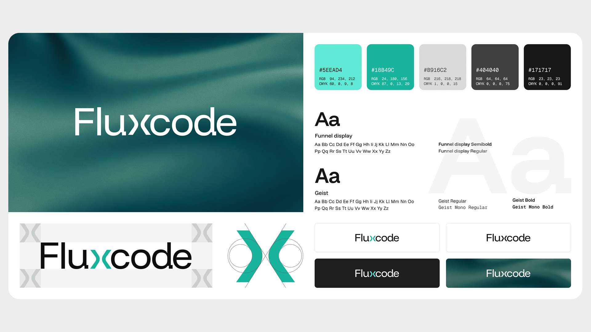

Using the Double Diamond framework and in-depth interviews, I analyzed both business and technical target audiences. I found that users look for concrete proof of competence over marketing fluff. I structured the information architecture to prioritize key trust signals: clear service offerings, tech stacks, verifiable references, and transparent collaboration processes.
Building digital trust through modern B2B web design
Role
UX/UI Designer
Company
Bachelor Thesis Project
Product
Web Presentation & Visual Identity
Focus
UX/UI Design, User Research, Brand Identity

Mission
Building trust
The client, a B2B IT company, lacked any online presence. This created a heavy information barrier that complicated client acquisition and weakened their perceived professionalism. My goal was to design a completely new web presentation and core visual identity that made key information easily accessible and built immediate trust with potential partners.
The users
Modern brand
To fix the absence of brand consistency, I developed a complete visual identity featuring a custom wordmark logo, technical typography, and a sleek dark-mode palette with a turquoise accent. The UI relies on progressive disclosure and clean visual hierarchy to keep cognitive load low. This ensures the interface feels highly professional and cutting-edge without sacrificing readability.

Result
Proven credibility
The project resulted in a high-fidelity interactive prototype, a comprehensive brand manual, and a developer-ready UI kit. Validated through two iterations of usability testing, the final design drastically improved the findability and clarity of information. The new presentation successfully positions the company as a credible, highly professional IT partner.